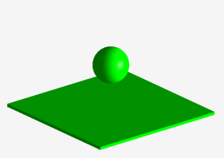
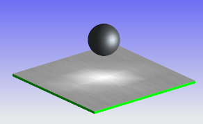

Create a Flat image
-
Open des07_method_test.

-
Right-click in the graphics window and choose Rendering Style→Studio .

-
On the Visualize Shape toolbar, click High Quality Image .
Note
High Quality Image is also available on the View toolbar.
-
In the High Quality Image dialog box, from the Method list, select Flat.
-
Click Start Shade.

-
Aspects to note:
-
No texture mapping on flat surface.
-
Tessellation of the sphere feature.
-
Background color is truncated to one color.
-
-
Click Erase Shade.